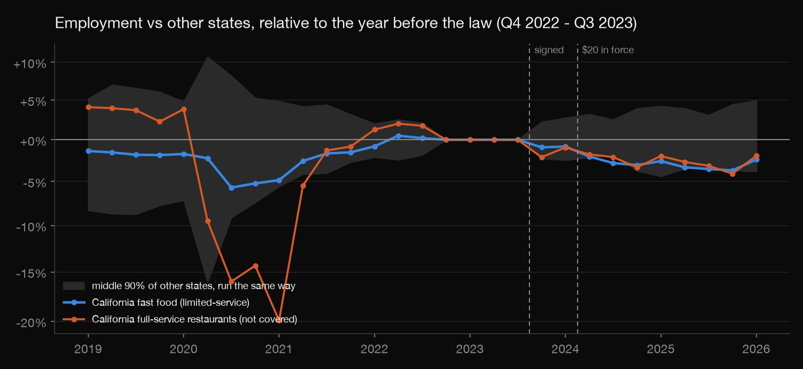
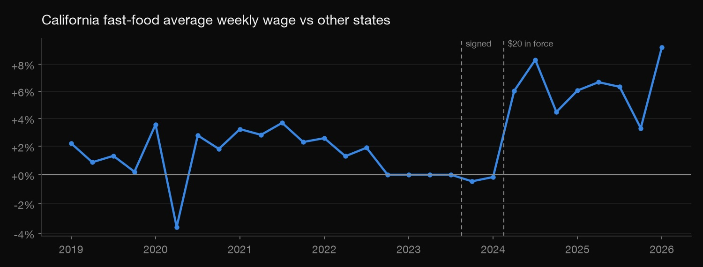
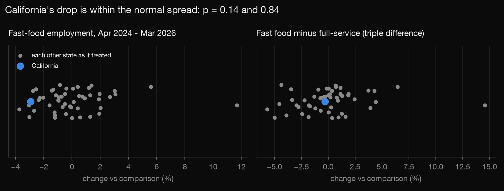

Statistics · Causal inference · 2026-10
California's $20 Fast-Food Wage
Did the $20 minimum wage cost California fast-food jobs? A causal analysis with difference-in-differences, a synthetic control, a triple difference and placebo tests on government job counts.

One state, one policy, about two years of data after it: this can rule out a large fast-food-specific job loss, but not a small one. QCEW counts jobs, not hours.
01 — The problem
On 1 April 2024, California raised the minimum wage at large fast-food chains to $20 an hour, one of the most argued-over labour policies in years. Some reports said it cost thousands of jobs; others said it didn't. Comparing jobs before and after isn't enough, because the whole economy moved too. The real question is causal: compared with what would have happened without the law, did fast-food employment fall?
02 — What I built
An analysis of the Bureau of Labor Statistics' Quarterly Census of Employment and Wages, which counts nearly every job, by state, 2019 – Q1 2026:
- Difference-in-differences: California's fast-food employment against the other 50 states, quarter by quarter.
- Synthetic control: a weighted blend of other states built to track California before the law.
- Triple difference: fast food against full-service restaurants, which the law didn't cover, inside California.
- First stage: did pay actually go up?
- Placebo inference: every test re-run with each other state pretending to be California.
03 — How it was built
- 01
Get the job counts
The QCEW open-data API gives, for each state and quarter, private employment and average weekly wages by industry. Two industries are pulled: limited-service restaurants (fast food), which the law targets, and full-service restaurants, which it doesn't. That's 51 states × 29 quarters × 2 industries, with nothing suppressed. California has about 566,000 fast-food jobs.
- 02
Pick the right before
The law was signed on 28 September 2023 and took effect on 1 April 2024, so employers could react early. The reference year is Q4 2022 – Q3 2023, which ends just before the signing. Each later quarter is compared with the same quarter of that year, so summer and holiday hiring patterns that differ between states cancel out. The two quarters between signing and the start date are shown but not counted.
- 03
Compare with other states, and with a synthetic California
The difference-in-differences asks how much more California's fast-food jobs changed than the other states' did. The synthetic control finds the weighted mix of states that best followed California through 2019–2023, COVID included, and asks how far California fell below it afterwards.

First, a sanity check: pay jumped about 6% relative to other states the quarter the law took effect. So the policy did bite.
- 04
Ask whether California stands out
With a single treated state, the usual standard errors don't work. Instead, every estimate is re-run 50 more times, each time pretending a different state got the law. If California's result is ordinary among those, it isn't evidence of anything. California's fast-food drop ranks 4th-lowest of 51, but six states with no such law moved at least as much (p = 0.14).

- 05
Use restaurants the law didn't touch
If the wage law cut fast-food jobs, full-service restaurants (not covered) shouldn't fall the same way. They did: −2.6% against fast food's −2.9%. Comparing the two inside California, the triple difference, leaves −0.3%, statistically nothing (p = 0.84).
check.pyrecomputes the headline estimate by plain arithmetic from the raw file and re-derives every p-value.def deseason(y): """Subtract each state's same-quarter value in the reference year: removes level and seasonality.""" qoy = y.index.str[-1] ref = y.loc[REF] ref.index = ref.index.str[-1] return y - ref.loc[qoy].values def event(y, treated, weights): """beta_t for one treated state against a weighted comparison (weights over the other columns).""" z = deseason(y) comp = z[weights.index] @ weights.values return z[treated] - comp
04 — Results
| Apr 2024 – Mar 2026 | California | Placebo p |
|---|---|---|
| Fast-food weekly wage vs other states | +6.3% | 0.04 |
| Fast-food jobs vs other states | −2.9% | 0.14 |
| Fast-food jobs vs synthetic California | −3.3% | 0.12 |
| Full-service jobs vs other states (not covered) | −2.6% | – |
| Fast food minus full-service | −0.3% | 0.84 |
- The law raised pay, clearly and immediately.
- California's fast-food jobs fell about 3% relative to other states (about 16,600 jobs), but not by more than ordinary state-to-state swings, and full-service restaurants fell almost as much.
- Bottom line: no evidence of a large job loss specific to fast food. A small one can't be ruled out: it would look like noise, or like California's broader restaurant slowdown.
- Before the law, California tracked other states (2022 average −0.04%), so there's no pre-existing trend driving the result.
05 — What I'd do next
- Use county data to compare California counties with neighbouring Nevada and Arizona counties (a border design).
- Add hours and prices: the law may have shown up in shorter shifts or menu prices rather than job counts.
- Re-run as more quarters arrive; two years is still early.